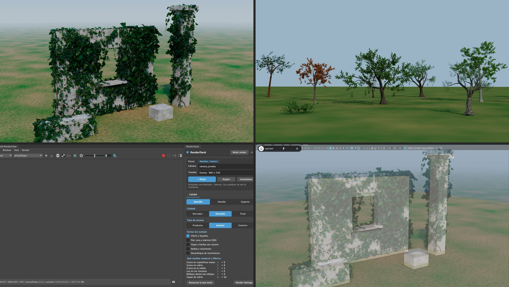
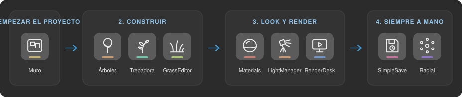

Qué es MantiTools
MantiTools reúne en Maya 2026 y 2027 las herramientas que hacen falta para llevar una escena de la idea al render: referencias, vegetación, materiales, luces, render, versiones y un menú rápido. Cada herramienta sigue siendo un plugin propio, pero las instalas de una vez, comparten aspecto y se configuran desde un único sitio.
- Un menú, MantiTools, con un submenú por herramienta.
- Un estante con un icono por herramienta, ordenado como se trabaja, y un icono para esta wiki.
- Una ventana central con las tarjetas de las herramientas, todos los ajustes y la ayuda.
Funciona en Windows y macOS, con la interfaz en español o en inglés. Es software libre (licencia MIT).

Las herramientas

Construir


Look y render
MaterialsBiblioteca de materiales OpenPBR con ida y vuelta a Substance Painter. LightManagerLuces de Arnold en pasos y Kelvin: esquemas de estudio, interiores y exteriores por zonas, sol por hora y comprobaciones.
LightManagerLuces de Arnold en pasos y Kelvin: esquemas de estudio, interiores y exteriores por zonas, sol por hora y comprobaciones. RenderDeskPanel de render de Arnold junto al visor: presets que se combinan, historial de pruebas con A/B y render final en segundo plano.
RenderDeskPanel de render de Arnold junto al visor: presets que se combinan, historial de pruebas con A/B y render final en segundo plano.
LightManagerLuces de Arnold en pasos y Kelvin: esquemas de estudio, interiores y exteriores por zonas, sol por hora y comprobaciones.RenderDeskPanel de render de Arnold junto al visor: presets que se combinan, historial de pruebas con A/B y render final en segundo plano.

Cómo encajan
El estante sigue el orden en que se trabaja una escena. Cada grupo está separado por una raya:

- Empezar el proyecto: reúne referencias y notas en Muro.
- Construir: modela la vegetación con Árboles, Trepadora y GrassEditor.
- Look y render: materiales con Materials, luces con LightManager y render con RenderDesk.
- Siempre a mano: guarda versiones con SimpleSave y lanza órdenes con Radial.
En El flujo de trabajo se ve un proyecto completo, paso a paso.
Por dónde empezar
| Si quieres… | Lee |
|---|---|
| Instalarlo por primera vez | Instalar y actualizar |
| Hacer algo en diez minutos | Primeros pasos |
| Saber qué hace cada botón del pack | El menú, el estante y la ventana central |
| Compartir ajustes con un grupo | La carpeta compartida |
| Resolver un problema | Si algo no funciona |
| Tener todos los atajos a la vista | Atajos y órdenes |
Consejo
En la wiki, pulsa / para buscar. Haz clic en cualquier imagen o GIF para verla en grande.